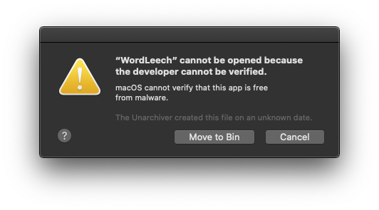
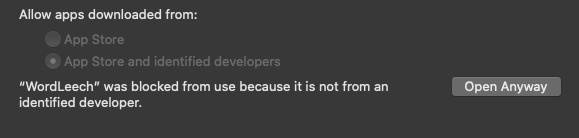
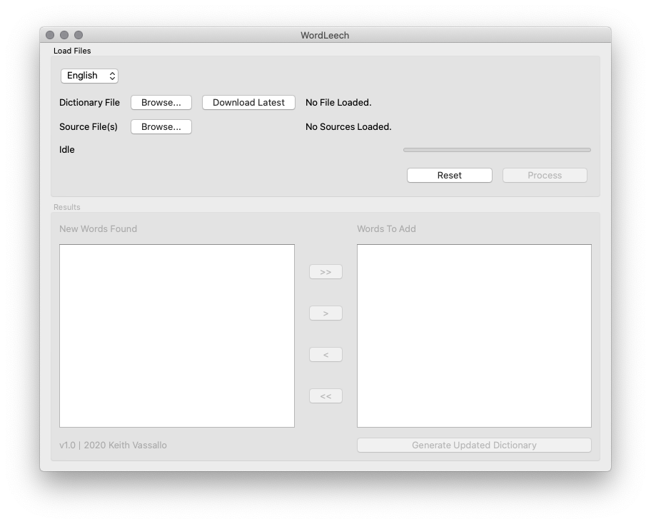
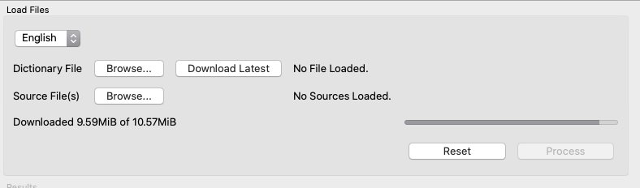
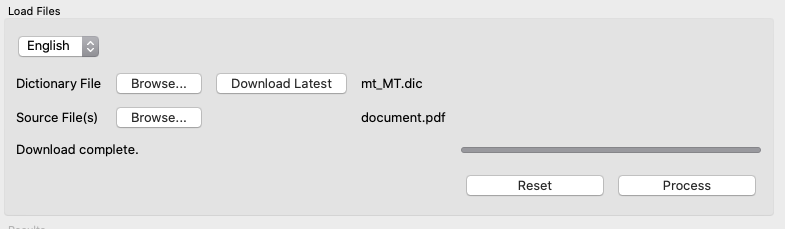
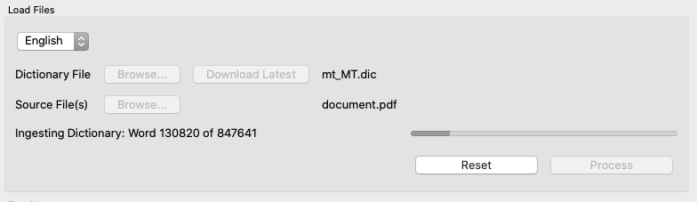
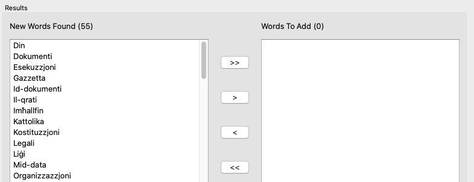
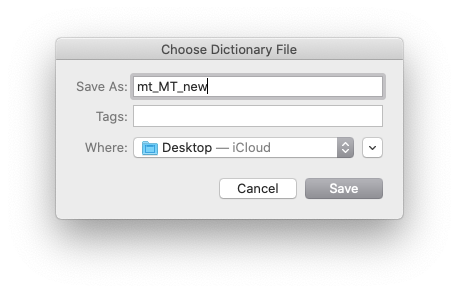

The Maltese spelling dictionary project is run entirely on a volunteer basis. This incldues the maintenance of the word list, the online spell checker, this website, the documentation, site infrastructure and promotion.
Here are some of the ways you can contribute:
We have developed a simple utility called WordLeech, which makes contributing words to the dictionary a breeze. The utility can scan multiple PDF files containing Maltese text. It will then compare each word in the source files with words in the dictionary. Any words found in the source files which are not in the dictionary are listed, and you can then choose which words should be added. Once added, a new dictionary file can be generated, containing the original dictionary words as well as those you have just added. All you need to do is download the utility, which is available for Windows, macOS and Linux.
Download WordLeechAfter downloading the file, simply double-click to run WordLeech. No installation is required.
Note: On Linux, you may get an error, or the application may fail to start , if you have missing Qt libraries. In this case, install the missing libraries. You are most probably missing libxcb, which you can install on Debian-based systems using:
sudo apt-get install libxcb-xinerama0
or on RPM-based systems:
sudo dnf install libxcb-xinerama0
On macOS, you will probably not be allowed to open the utility, with an error as shown below:
To allow the program to run, go to System Preferemces > Security & Privacy > General and click Open Anyway. You will only need to do this once.
After running WordLeech, you will be shown the main user interface.
The first thing you'll need to do is to load a current version of the Maltese spelling dictionary. You can click Browse... to find a version on your computer, or Download Latest to download the latest version of the dictionary. If you intend to submit your contributions, please make sure you download the latest dictionary first, to avoid duplication.
Next, you can load the source files. These must be PDF files written in Maltese. You can load multiple files at a time.
Once both the dictionary and source files have been loaded, click Process and let the utility do its thing. Depending on the size of your source files, this could take a while.
After the files have been processed, you will be shown a list of words which were not found in the dictionary. You can use the navigation buttons to add/remove words to the Words to Add list.
Finally, once you have added the words you need, click Generate Updated Dictionary, which will generate the new dictionary in a location of your choice.
If you would then like to contribute this dictionary to our project, simply get in touch at keith@spelling.mt